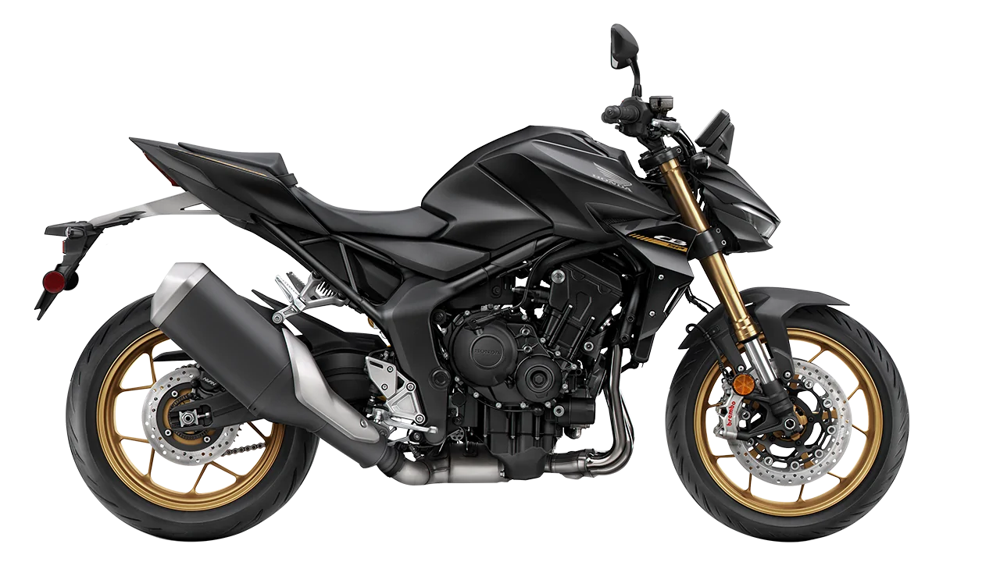
CB 1000R
Naked deportiva de alto cilindraje, motor potente, aceleración fuerte y diseño agresivo para calle y carretera.

Naked deportiva de alto cilindraje, motor potente, aceleración fuerte y diseño agresivo para calle y carretera.
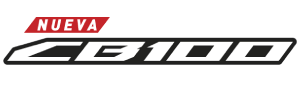
.webp "Honda CB100")
Moto urbana económica, bajo consumo, ideal para principiantes y uso diario en ciudad.
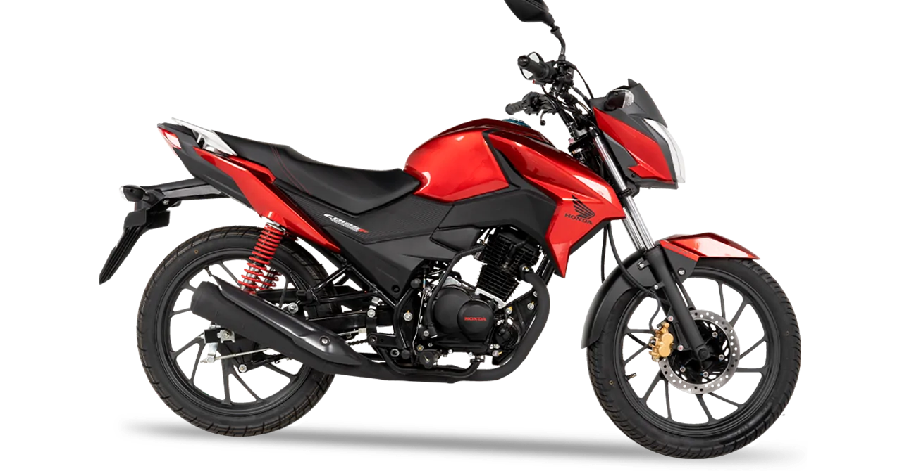
Ligera y eficiente, perfecta para movilidad diaria, muy ahorradora en gasolina y fácil de manejar.
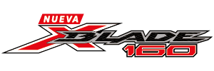
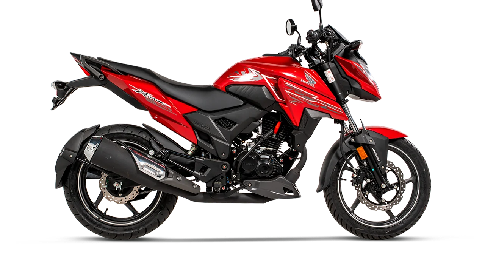
Doble propósito, suspensión alta, resistente para trocha y ciudad, muy usada en terrenos irregulares.
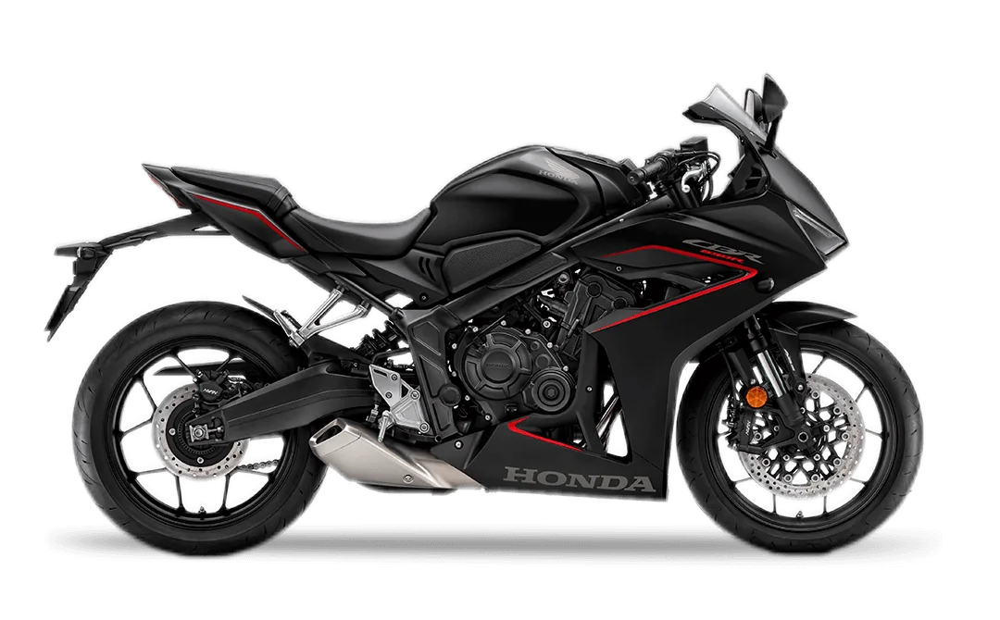
Deportiva carenada, motor de 4 cilindros, rápida, estable y con postura más cómoda que una super sport.
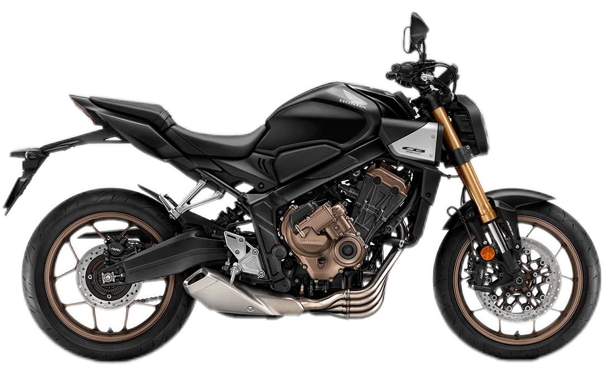
Naked deportiva, mismo motor potente de la CBR pero con postura más relajada y diseño moderno.
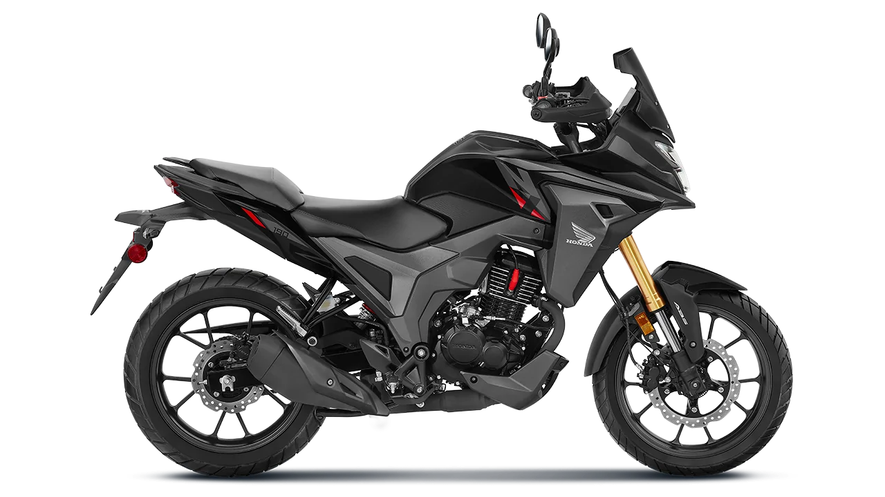
Adventure ligera, cómoda para viajes cortos, buena altura y apta para ciudad y caminos destapados.
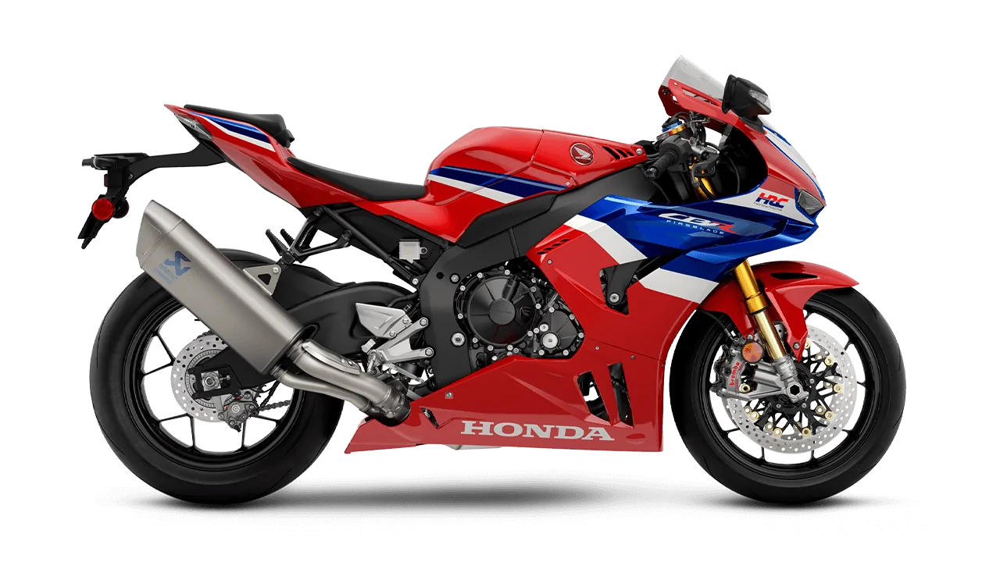
Superbike de alto rendimiento, diseñada para pista, máxima velocidad, tecnología racing y gran potencia.
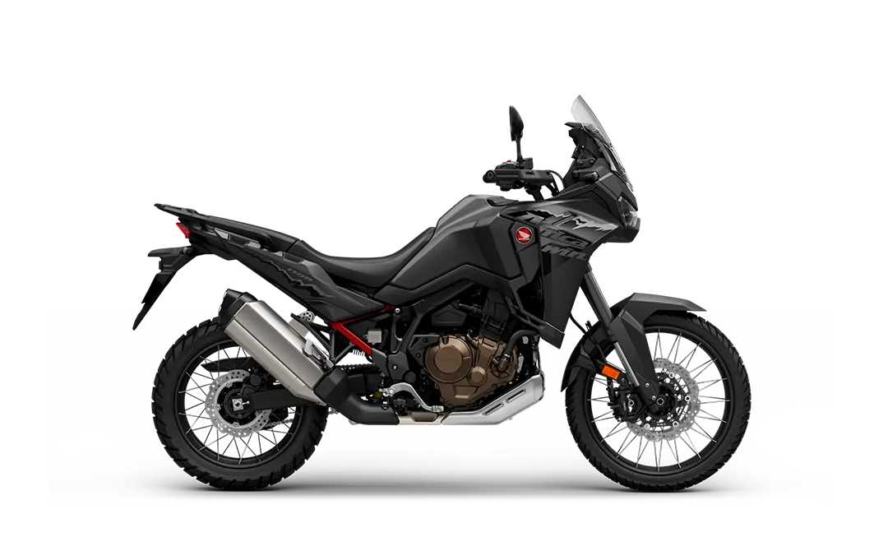
Adventure de largo recorrido, ideal para viajes largos y off-road, muy cómoda y extremadamente resistente.